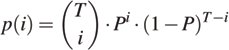
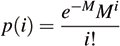

13.6. Discrete DistributionsThe specifications for the discrete distributions in the TR1 library give the probability of each possible value. The formula p(i)= ... means that the probability of getting the value i is given by the expression on the right-hand side of the equals sign. 13.6.1. bernoulli_distributiontemplate < class RType = double >
class bernoulli_distribution {
public :
// distribution interface
typedef int input_type ;
typedef bool result_type ;
explicit bernoulli_distribution (
const RType & P0 = RType (0.5))
: P( P0) {}
void reset ();
template < class Eng >
bool operator() ( Eng & eng);
// type-specific members
RType p () const { return P ; }
// exposition only:
private :
RType P;
};
Instances of the template bernoulli_distribution produce sequences of random values true and false, with the probability of true equal to the stored value P. 13.6.2. binomial_distributiontemplate < class IType = int, class RType = double >
class binomial_distribution {
public :
// distribution interface
typedef /* implementation defined */ input_type ;
typedef IType result_type ;
explicit binomial_distribution (
IType T0 = 1, const RType & P0 = RType (0.5))
: T(T0), P(P0) {}
void reset ();
template < class Eng >
result_type operator() ( Eng & eng);
// type-specific members
IType t () const { return T; }
RType p () const { return P; }
// exposition only:
private :
IType T;
RType P;
};

Instances of the template binomial_distribution produce random sequences of values of type IType in the closed range [0, T]. For an event whose probability of success is P, each value I in the random sequence occurs with probability equal to the probability of getting success exactly I times in T trials. 13.6.3. geometric_distributiontemplate < class IType = int, class RType = double >
class geometric_distribution {
public :
// distribution interface
typedef RType input_type ;
typedef IType result_type ;
explicit geometric_distribution (
const RType & P0 = RType (0.5))
: P(P0) {}
void reset ();
template < class Eng >
result_type operator() ( Eng & eng);
// type-specific members
RType p () const { return P; }
// exposition only:
private :
RType P;
};
Instances of the template geometric_distribution produce sequences of random values of type IType, all of which are greater than or equal to 1. For an event whose probability of success is P, each value I in the random sequence occurs with probability equal to the probability of getting the first success on the Ith trial. 13.6.4. poisson_distributiontemplate < class IType = int, class RType = double >
class poisson_distribution {
public :
// distribution interface
typedef RType input_type ;
typedef IType result_type ;
explicit poisson_distribution ( const RType & M0 = RType (1))
: M( M0) {}
void reset ();
template < class Eng >
result_type operator() ( Eng & eng);
// type-specific members
RType mean () const { return M ; }
// exposition only:
private :
RType M;
};

Instances of the template poisson_distribution produce random sequences of values of type IType, all of which are greater than or equal to 0. For an event that occurs at intervals whose average duration is M, each value I in the random sequence occurs with probability equal to the probability that I events will occur in an interval of duration M. 13.6.5. uniform_inttemplate < class IType = int >
class uniform_int {
public :
// distribution interface
typedef IType input_type ;
tpyedef IType result_type ;
explicit uniform_int ( IType min0 = 0, IType max0 = 9)
: N( min0), X( max0) {}
void reset ();
template < class Eng >
result_type operator() ( Eng & eng);
// type-specific members
template < class Eng >
result_type operator() ( Eng & eng, result_type mx);
result_type min () const { return N ; }
result_type max () const { return X ; }
// exposition only:
private :
IType N;
IType X;
};
Instances of the template uniform_int produce uniformly distributed random sequences of values of type IType, all of whose values are greater than or equal to the specified minimum value and less than or equal to the specified maximum value. Further, the function call operator that takes two arguments produces random sequences all of whose values are greater than or equal to the specified minimum value and strictly less than the value of the second argument.[19]
|